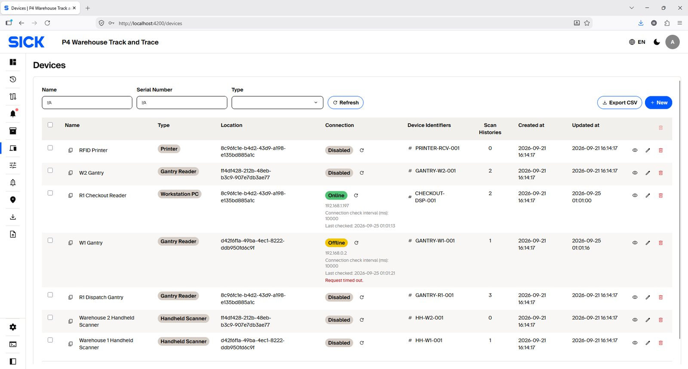
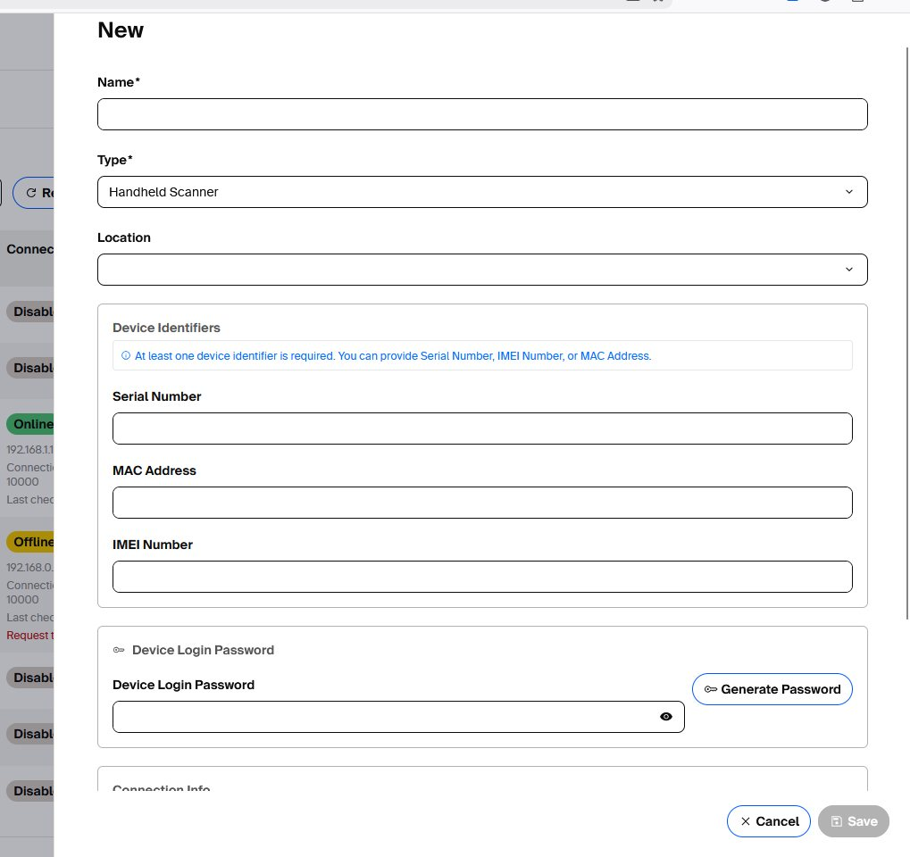
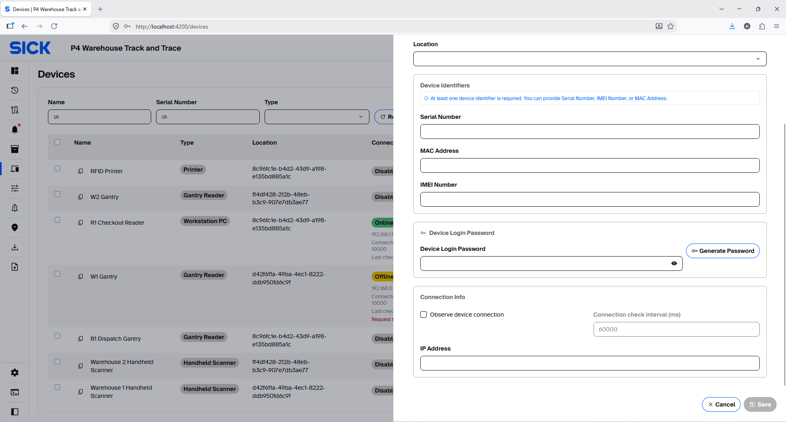
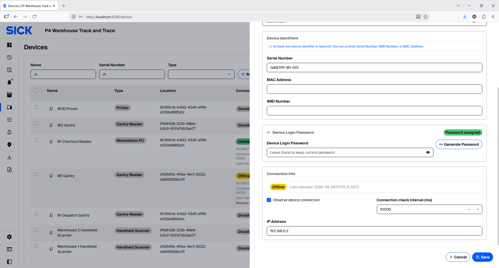
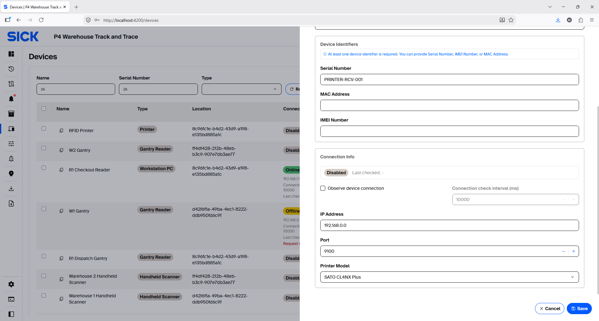
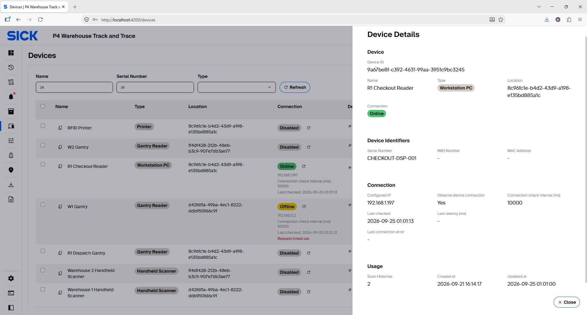
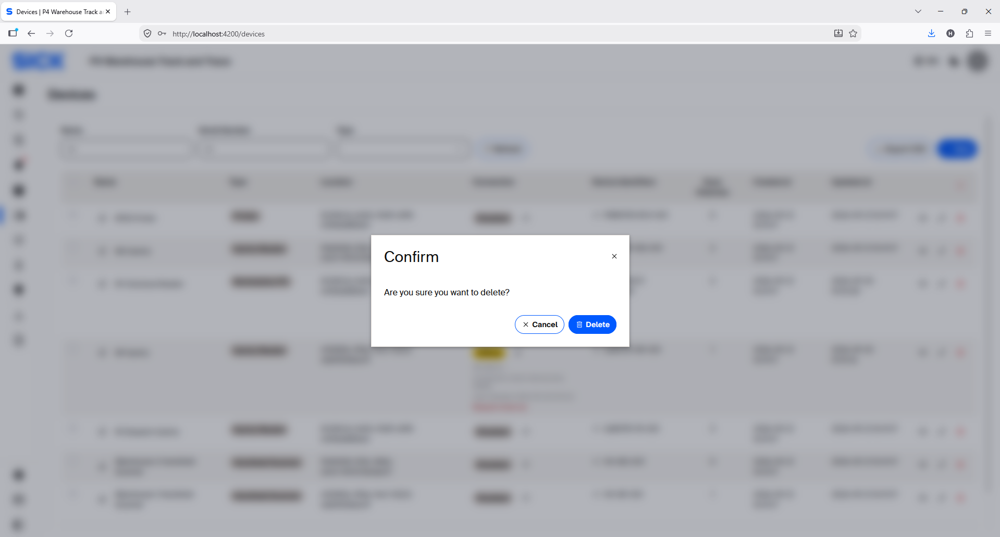
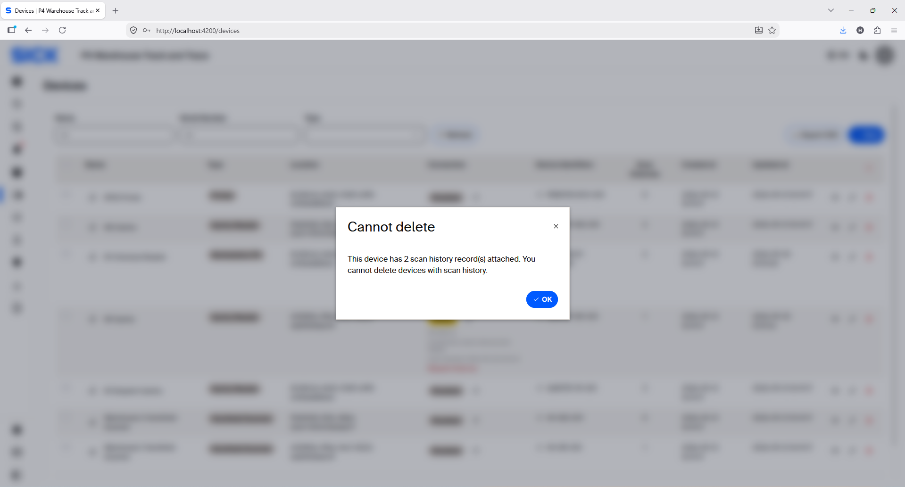

Devices
Create and maintain Device records, technical credentials and connection settings. The Create/Edit panel changes its available inputs according to the selected Device Type.
Manage Devices
The Devices page lists configured units and their current connection state. Use the filters to find a Device, open its details, edit configuration, or create a new Device.

Create or edit a Device
Select the correct Device Type first. The form then shows only the fields supported by that type. All Device types use the common identity fields below.
| Common field | How to use it |
|---|---|
| Name | Use a clear, unique name that identifies the installed unit or application. |
| Type | Select the Device Type that matches the real unit/application. This controls the additional form fields. |
| Location | Assign the Device to the correct configured Location when applicable. |
| Device Identifiers | Provide at least one identifier: Serial Number, MAC Address or IMEI Number. |

Device Login Password
The edge application uses a configured Device identifier together with this password to authenticate to the Admin system. After authentication, it can retrieve permitted reference/configuration data and submit permitted operational data.
| Item | How it is used |
|---|---|
| Generate Password | Creates a strong password. Copy it securely to the matching edge application during commissioning. |
| Edit existing Device | Leave the password field blank to keep the current password. Enter/generate a new value only when rotating the credential. |
| Password assigned | The edit panel shows whether a credential is already assigned, but the original password is not displayed again. |
Connection Info fields by Device Type
Connection Info is dynamic. The base connection-monitoring fields are available for every current Device Type, while Port, Printer Model and RFID-reader command fields appear only for the types that need them.
| Device Type | IP Address | Port | Printer Model | RFID reader controls |
|---|---|---|---|---|
| Handheld Scanner | Shown | — | — | — |
| RFID Reader | Shown | Shown | — | Trigger Command, Auto Stop; when Auto Stop is enabled: Stop Delay and Stop Command |
| Gantry Reader | Shown | — | — | — |
| Workstation PC | Shown | — | — | — |
| Printer | Shown | Shown | Shown | — |
Base Connection Info
For every Device Type that supports network configuration, the panel shows Observe device connection, Connection check interval (ms) and IP Address.
- Observe device connection — enable it when the Admin system should periodically check whether the configured IP is reachable.
- Connection check interval (ms) — becomes active when connection monitoring is enabled. The supported range is 1,000–86,400,000 ms; the default is 60,000 ms.
- IP Address — enter the address assigned to the Device in the approved site IP plan. It is required when connection monitoring is enabled.

Handheld Scanner, Gantry Reader, Workstation PC and Other
These types show the same basic connection fields and Device Login Password. Their application-specific connections are configured in the corresponding edge application, not as additional inputs in this panel.
- Handheld Scanner: configure Admin API, MQTT, RFID reader and barcode/QR settings in the Handheld app.
- Gantry Reader: configure local RFID reader, PicoScan LiDAR, MQTT and Gantry runtime settings in the Gantry/Node-RED application.
- Workstation PC: configure Admin API, MQTT and assigned RFID reader in the workstation/Dispatch application.
- Other: use the base fields for the registered edge/application identity and optional IP monitoring.
Edit-mode connection status
When editing an existing monitored Device, the Connection Info section also shows its latest connection status and last check time. This helps verify whether the configured IP is reachable before saving further changes.

RFID Reader
RFID Reader adds direct reader-control fields because the system can connect to the reader endpoint.
| Additional field | Purpose |
|---|---|
| Port | TCP port used by the RFID reader connection. |
| Trigger Command | Command sent to start the configured RFID read operation. |
| Auto Stop | When enabled, the application automatically sends a stop command after triggering. |
| Stop Delay | Shown only when Auto Stop is enabled; defines the delay before stop. |
| Stop Command | Shown only when Auto Stop is enabled; command sent to stop reading. |
Printer
Printer does not show Device Login Password. It adds Port and Printer Model to the base Connection Info fields. Select the installed supported model and configure the printer endpoint according to the approved site IP plan.

View connection details after saving
Open a Device to review its configured IP, whether connection monitoring is enabled, the check interval, last check time, latency and the latest connection error when available.

Delete a Device
Use Delete only when the Device record is no longer required. The UI asks for confirmation before deletion.

